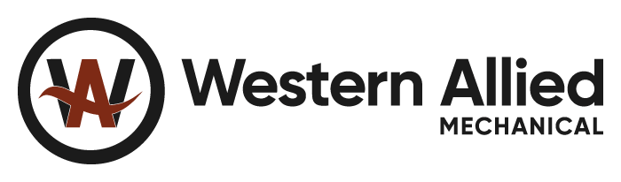

Western Allied Mechanical
As a Project Engineering Intern at Western Allied Mechanical, I supported commercial HVAC projects in healthcare and laboratory environments. This role gave me hands-on exposure to mechanical systems, construction drawings, project coordination, field engineering, and the relationship between design intent and real-world installation.

Engineering Work
- Reviewed and redlined mechanical plans to identify discrepancies and clarify installation requirements.
- Conducted weekly site audits to check mechanical installation quality, code alignment, and project progress.
- Collaborated with engineers to recreate mechanical drawing packages and resolve coordination gaps.
- Supported RFIs, submittals, procurement logs, and equipment tracking across multiple active projects.
What I Learned
- How HVAC systems translate from drawings into real installed mechanical systems.
- How airflow, heat transfer, energy efficiency, and equipment layout affect design decisions.
- How engineers, project managers, subcontractors, and field teams coordinate under real project constraints.
- How technical communication prevents rework, schedule delays, and installation conflicts.
Why It Mattered
This internship strengthened my understanding of applied mechanical engineering in high-stakes environments. Working on hospitals and laboratories showed me how technical decisions affect safety, reliability, comfort, and system performance in real buildings.
Connection to My Engineering Goals
Although my long-term interests include aerospace, robotics, and thermal-fluid systems, this role gave me valuable experience with real engineering documentation, interdisciplinary communication, mechanical design constraints, and field validation.
Undergraduate Research
In undergraduate research, I worked on a fluid dynamics project focused on understanding how surface coatings can reduce drag in marine applications. The work involved MATLAB analysis, RC boat testing, telemetry data, GPS data, and experimental validation.
Research Focus
Evaluating how drag-reducing coatings affect boat performance, with the long-term goal of applying findings from small RC boat testing to larger marine systems.
Technical Contributions
- Developed MATLAB tools to support experimental data analysis.
- Worked with GPS and telemetry data from RC boat testing.
- Supported performance evaluation of coating behavior in marine drag reduction.
- Connected experimental measurements to fluid dynamics concepts.
Skills Developed
- Data processing and visualization in MATLAB.
- Experimental validation and test planning.
- Fluid dynamics analysis in a research setting.
- Interpreting noisy real-world engineering data.
Additional Work Experience
Earlier work experiences helped me build accountability, leadership, customer communication, and reliability before entering engineering roles.
Target
Built customer service, punctuality, register accuracy, and self-management skills in an independent front-facing retail role.
Panda Express
Promoted into a leadership role responsible for closing procedures, team accountability, customer service, and end-of-day financial handling.